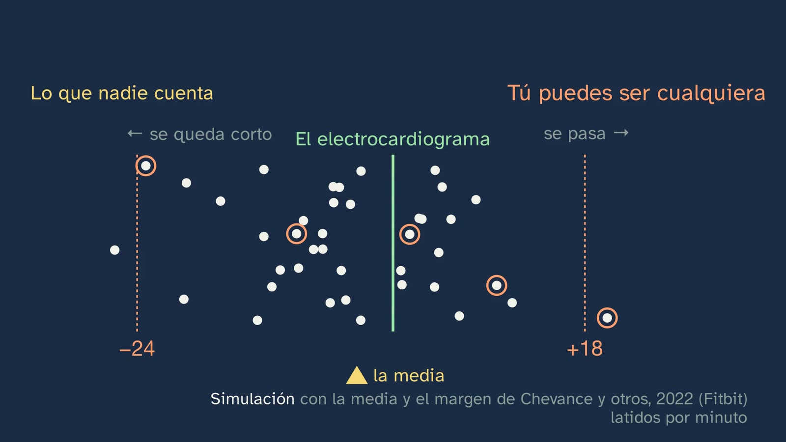
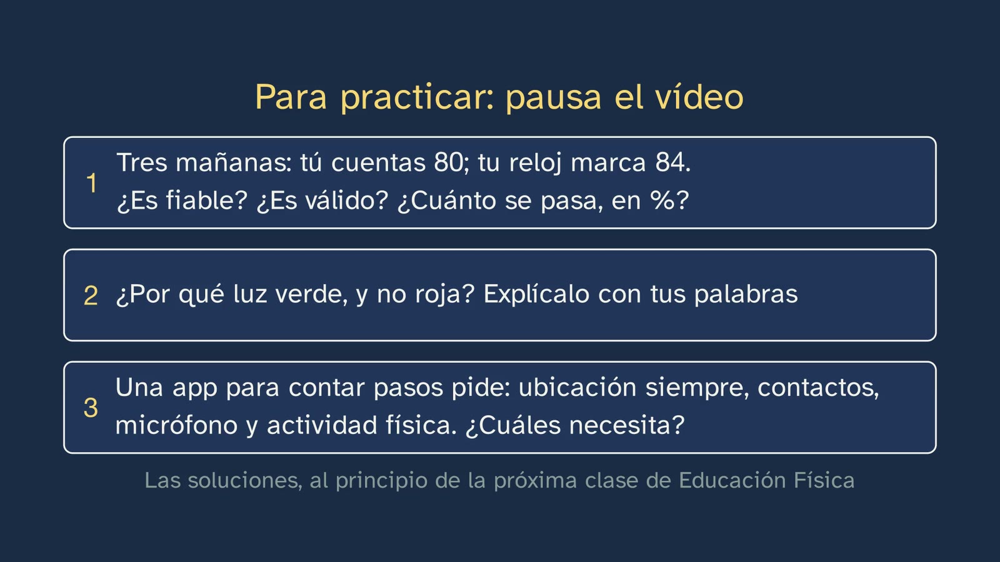

Las apps que te miden
En pocas palabras
La clase responde a la pregunta con que acabó la anterior: tu reloj, tu pulsera o tu móvil, ¿cuánto puedes fiarte de lo que te dicen? ¿Y a quién más se lo cuentan? El alumnado examina al reloj como examinó las pruebas en la clase 3: qué mide, cómo lo mide y si mide bien, comparándolo con la medida buena. Y se lleva una pregunta para cualquier función de un reloj de hoy, por muchos modos que tenga: cada número lo mide un sensor (sigue algo de tu cuerpo), lo reconoce en tu movimiento (busca una forma, y el modo le dice cuál) o lo calcula (una fórmula o un programa hechos midiendo a otras personas). Cuanto más lejos del sensor, más margen, por lo general.
El gancho es algo que muchos han visto sin saber qué es: la luz verde que parpadea debajo de un reloj deportivo. Mira tu pulso: el reloj hace lo mismo que los dedos de la clase 2, pero con luz.
Lo mide un sensor: tu pulso. Un corte de la muñeca, pintado con el pulso real de una chica de 21 años (PPG-DaLiA): con cada latido, los vasos de la piel se llenan un poco más, la sangre se traga más luz y vuelve menos al sensor; el reloj cuenta cuántas veces baja la luz (fotopletismografía, «la explicación que aceptan los científicos», porque el origen exacto de la señal aún se discute: Allen, 2007). Por qué verde, con dos razones: la sangre se ve roja porque devuelve el rojo y se traga el verde, así que el verde es el color que cambia con cada latido (la sangre con oxígeno absorbe a 530 nm más de cien veces más que a 660 nm: 139 veces con los datos de Bosschaart y otros, 2014; 125 con los de Prahl); y el verde no baja hondo, se queda en los vasos finos de arriba y da una señal más limpia con el sensor al lado (Charlton y otros, 2022).
¿Acierta? Se comprueba con la medida buena al lado, el electrocardiograma (o una banda de pecho validada). Con datos reales: sentada, cada latido del pecho tiene su bajada de luz en la muñeca, y los dos ritmos casi coinciden (86 y 87 por minuto, contando latidos y bajadas). En general, el metaanálisis de Zhang y otros (2020; 44 estudios, 15 marcas) da en reposo un sesgo medio de −0,01 latidos por minuto. Y lo que nadie cuenta: de media no es contigo. En el metaanálisis de Chevance y otros (2022; relojes Fitbit), el 95 % de las medidas sueltas caía entre 24 latidos por debajo y 18 por encima del electrocardiograma: los errores se compensan en la media, pero tú puedes ser cualquiera de esos puntos.
Cuando te mueves. La misma chica en las escaleras de un edificio: su corazón va a 177 latidos por minuto, y la luz de su muñeca y el movimiento de su muñeca, a 117. La luz ya no sigue al corazón, sino al movimiento (el braceo y los pasos meten en la luz un vaivén más fuerte que el latido: Zhang, Pi y Liu, 2015). Por eso el reloj lleva un acelerómetro, que nota el movimiento y lo descuenta. Aun así, depende de lo que hagas: de media, frente al electrocardiograma, −0,5 latidos por minuto en la cinta, −4,6 en bici y −7,3 con pesas (Zhang y otros, 2020). Más sensores: luz roja e infrarroja para el oxígeno de la sangre (aquí sí sirve la roja, porque la sangre con oxígeno y sin él se tragan distinto el rojo: a 660 nm, 0,15 frente a 1,64 mm⁻¹, Bosschaart y otros, 2014; Jubran, 2015); dos electrodos, uno detrás y otro en la corona, para un electrocardiograma de una derivación; un barómetro, para la altura (un piso, 3 m, en Garmin); y el GPS. Apple tiene su medida del oxígeno pensada desde los 18 años, y Apple y Samsung, el electrocardiograma desde los 22: para el alumnado, conviene saberlo.
Lo reconoce en tu movimiento: tus pasos. El acelerómetro por dentro (una pieza de menos de un milímetro, colgada de muelles, que se queda atrás por inercia) y un contador de pasos con su umbral, sobre la señal real de una muñeca que anda: cuenta 75 de sus 76 picos. Con los golpes más suaves (simulación), los picos no llegan a la raya y cuenta de menos: andando muy despacio en una cinta, los aparatos de muñeca se apartaban de media un 41 % de los pasos contados, frente al 15 % a paso normal (CADENCE-Adults, 258 adultos, 2022; con todos los aparatos, también los de cintura, muslo y tobillo, 40 % y 7 %). Mover la muñeca sin andar cuenta de más, y empujar un carro, de menos. En las revisiones, casi siempre se quedan cortos. Los modos, según los manuales de las marcas: al elegir uno, le dices al reloj qué movimiento reconocer y qué sensores usar (Apple: «Depending on your workout, it selects the most appropriate inputs»). En la cinta, sin GPS, pasos y distancia salen del vaivén del brazo y de la zancada que aprendió en tus carreras con GPS; agarrado a la barra, acierta menos (Garmin). En pesas, algunos relojes cuentan una repetición cada vez que el brazo que lleva el reloj vuelve al inicio, y las de piernas pueden no contarlas (Garmin); de cuánto aciertan, de momento sólo hay estudios pequeños; otros relojes no las cuentan solos y registran el tiempo y el pulso. En la piscina, un largo por cada giro en la pared, por la longitud que le das, y una brazada por cada vuelta del brazo del reloj; con 78 nadadores y dos relojes, el error en los largos iba de casi 0 a un 20 %, según el reloj y la velocidad (Lee y otros, 2018). En la bici estática, la muñeca casi no se mueve: registra el tiempo y el pulso, y con un sensor de la bici, o la bici conectada, la velocidad, la cadencia y la potencia (Apple, Garmin).
Lo calcula: tus calorías. El reloj no las mide: no lleva ningún sensor de calorías. La medida buena es la calorimetría indirecta, la máscara de la clase 3: el oxígeno que gastas (unas cinco kilocalorías por litro; de 4,7 a 5,05 según lo que quemes, con la fórmula de Weir). El reloj las calcula con una fórmula hecha midiendo a otras personas (pulso, movimiento, el modo, edad, peso, altura y sexo), como 220 − edad. En la revisión de Germini y otros (2022; 65 estudios), el error medio de las calorías pasaba del 30 % en todas las marcas. Y depende de lo que hagas: corriendo, de media, se acerca más que en bici (O'Driscoll y otros, 2020) o con pesas (ningún aparato válido en bici ni con pesas: Boudreaux y otros, 2018); con pesas, según el aparato, del 15 a más del 50 %, de más o de menos (Mitchell y otros, 2024), porque el esfuerzo va a golpes y el pulso predice bien el gasto en un esfuerzo seguido (Reis y otros, 2019). Y como con el pulso, con más margen: en media hora de ejercicio, las medidas sueltas iban de unas 380 kcal de menos a más de 200 de más (Chevance y otros, 2022; cálculo del canal). Más cálculos: el consumo máximo de oxígeno (el «VO₂ máx» del reloj) sale de comparar el pulso con la velocidad; de media casi acierta, pero a una persona se le puede apartar hasta unos 10 ml/kg/min, arriba o abajo (Molina-Garcia y otros, 2022). Las puntuaciones de recuperación o de estrés: en un estudio de diez marcas, ninguna publicaba su fórmula exacta (Doherty y otros, 2025). El sueño: en el laboratorio, las fases se leen en las ondas del cerebro (ligero, pequeñas y rápidas; profundo, lentas y grandes), los ojos y los músculos (polisomnografía); el reloj no ve el cerebro: con el movimiento y, muchos, el pulso, un programa entrenado con noches de laboratorio calcula la fase (Apple, con el acelerómetro: «Estimating Sleep Stages from Apple Watch», 2023). Con una noche real (Walch y otros, 2019: un Apple Watch en un laboratorio del sueño) y ondas reales de otra persona (Sleep-EDF). Medido: el tiempo dormido se aparta de media unos 17 minutos (Lee y otros, 2025: 24 estudios); despierto y quieto en la cama, marca como despierto de 2 a 5 minutos de cada 10 (Schyvens y otros, 2025; Chinoy y otros, 2021); en las fases, de cada diez minutos de sueño, en unos cinco dice la misma fase que el laboratorio (Miller y otros, 2022).
El error típico, «si lo dice el reloj, es exacto», desmontado: una pantalla con todas sus cifras no enseña su margen. El semáforo resume, por familias, con todo lo de la clase en su sitio: lo que mide un sensor, verde (el pulso, el oxígeno en sangre, el electrocardiograma, la altura, el GPS; el pulso, quieto, casi exacto de media, y moviéndote se aparta más); lo que reconoce, amarillo (los pasos, las repeticiones, los largos; los pasos, un 15 % a paso normal); lo que calcula, rojo (las calorías, el VO₂ máx, las puntuaciones, las fases del sueño; las calorías, más del 30 %), con excepciones, como el tiempo que duermes. Y la pregunta, sola: ¿lo mide, lo reconoce o lo calcula? Y de 310 modelos de 20 marcas, sólo 34 aparecen comprobados en algún estudio, en algo (Doherty y otros, 2024): uno de cada nueve.
Tus datos. El mapa de Strava de 2017, que en enero de 2018 dejó ver bases militares en zonas de desierto sin el nombre de nadie (esquema propio, no el mapa de la empresa); y Polar, en julio de 2018, donde las rutas que empezaban y acababan en el mismo sitio delataban dónde vivían militares y agentes de inteligencia. Lo que guarda el reloj de tu cuerpo, día tras día, son datos de salud para las autoridades europeas de protección de datos (Grupo del Artículo 29, 2015), también lo que la app concluye de ellos sobre tu salud aunque sea falso; el reglamento europeo prohíbe tratarlos salvo excepciones, la primera tu consentimiento explícito (art. 9), y en España ese permiso lo das tú desde los 14 años (Ley Orgánica 3/2018, art. 7.1). Cinco preguntas antes de instalar una app, tres gestos que te protegen, y un número no es tu salud.
Objetivo. Al terminar, el alumnado sabrá de dónde sale cada número de su reloj o de su app deportiva (si lo mide un sensor, como el pulso; si lo reconoce en su movimiento según el modo, como los pasos, las repeticiones o los largos; o si lo calcula, como las calorías o el sueño), cuánto puede fiarse de cada uno y cómo se sabe, y qué hacen con sus datos de salud y cómo protegerlos.
Currículo
Real Decreto 243/2022, Educación Física, materia común de 1.º de Bachillerato. Citas comprobadas en el texto del laboratorio, copia del consolidado del BOE (comprobado el 05/10/2026 al diseñar el tema).
| Elemento | Qué dice el decreto | Dónde se trabaja |
|---|---|---|
| Saber básico (bloque A, salud física) | «Herramientas digitales para la gestión de la actividad física.» | Toda la clase: qué mide cada sensor del reloj, cómo y cuánto se equivoca (2:59–11:27), y qué pasa con sus datos (17:18–20:14) |
| Saber básico (bloque A, salud física) | «Autoevaluación de las capacidades físicas y coordinativas (como requisito previo a la planificación): técnicas, estrategias y herramientas de medida.» | El reloj como herramienta de medida, frente a la medida de referencia (4:44) |
| Competencia específica 1 | «Interiorizar el desarrollo de un estilo de vida activo y saludable, planificando responsable y conscientemente su actividad física a partir de la autoevaluación personal en base a parámetros científicos y evaluables…» | Un número no es tu salud; el reloj, como pista para la hora diaria (19:52) |
| Descriptor STEM2 (de la CE1) | «… apreciando la importancia de la precisión y la veracidad y mostrando una actitud crítica acerca del alcance y limitaciones de los métodos empleados.» | La media no es tu medida (5:24); el error típico (15:45) |
| Descriptor CD4 (de la CE1) | «Evalúa riesgos y aplica medidas al usar las tecnologías digitales para proteger los dispositivos, los datos personales, la salud y el medioambiente…» | Strava y Polar (17:18–18:07); las preguntas y los gestos (19:07–19:28) |
| Criterio 1.1 | «Planificar, elaborar y poner en práctica de manera autónoma un programa personal de actividad física […] evaluando los resultados obtenidos.» | Qué números del reloj sirven para seguirte y cuáles no (16:05, 19:52) |
| Criterio 1.4 | «… aplicando con autonomía e independencia criterios científicos de validez, fiabilidad y objetividad a la información recibida.» | La validez del reloj frente al electrocardiograma y la calorimetría; el ejercicio 1, fiable y no válido |
| Criterio 1.5 | «Emplear de manera autónoma aplicaciones y dispositivos digitales relacionados con la gestión de la actividad física, respetando la privacidad y las medidas básicas de seguridad vinculadas a la difusión pública de datos personales.» | Tus datos (17:18–20:14) |
El decreto no nombra ningún aparato. Los relojes y las pulseras son la concreción del canal de «herramientas digitales para la gestión de la actividad física». La ESO ya trae las «herramientas digitales» y sus riesgos: la clase los recupera y los lleva a cómo se mide y con qué error.
Lo que hay que traer. De la clase 3, qué es una prueba válida y fiable, y la máscara del laboratorio; de la clase 2, cómo se toma el pulso y que 220 − edad da una media; de la clase 1, la hora diaria como mínimo.
Cómo está construida la clase
Capítulos del vídeo
| Parte | Qué pasa | Por qué así |
|---|---|---|
| Lo que ya sabes y las soluciones | ¿Qué quiere decir que una prueba sea válida? (0:23, silencio corto): mide lo que dice medir, y se sabe con la medida buena; hoy, con el reloj. Las tres soluciones de la clase 3, cada una con su enunciado (0:47–1:28) | Recuperar (Roediger y Karpicke, 2006) con la idea que abre la clase |
| La luz verde | El gancho (1:54); mira tu pulso, como tus dedos de la clase 2 (2:02); la misión (2:18) y las tres familias: los números salen del reloj mezclados y se ordenan en «lo mide», «lo reconoce» y «lo calcula», que se quedan arriba como el recorrido (2:25) | Lo cercano y la pregunta, antes de la explicación; un criterio que sirve para cualquier reloj |
| Tu pulso, con luz | El corte de la muñeca, que late con el pulso real; la luz que vuelve, en un monitor (2:59); ¿roja o verde? (3:40, predicción); el color de la sangre, las dos linternas, la curva real de absorción y la profundidad (3:54); un momento para pensar (4:33) | Predecir antes de ver; pensar lo que se mide (ADR-099); medir sobre lo real |
| ¿Acierta tu reloj? | La medida buena, el electrocardiograma, con las señales reales de una chica sentada (4:44); la ficha del metaanálisis y lo que nadie cuenta: la media no eres tú (5:24) | La ficha del estudio antes del resultado; el error de cada uno frente al sesgo medio |
| Cuando te mueves | ¿Quieto o en una escalera? (6:07, predicción); las tres señales reales en la escalera (6:17); el acelerómetro que descuenta el movimiento, y el pulso en la cinta, en bici y con pesas (6:57); más sensores: el oxígeno, con la curva real de las dos sangres, el electrocardiograma, el barómetro y el GPS (7:20) | Lo real, grande: la luz que deja de seguir al corazón; el guiño a «¿roja o verde?» |
| Lo reconoce: pasos y modos | El acelerómetro por dentro (8:02); el contador con su umbral, sobre una muñeca real (8:30); muy despacio, ¿de más o de menos? (8:42); CADENCE (8:51); los modos, una pizarra cada uno, con su figura en movimiento y lo que nota la muñeca: la cinta (9:34), las pesas (9:59), la piscina (10:29) y la bici, con una pregunta antes (10:53–11:02) | La forma vacía antes que lo que la llena; lo que dice cada manual, con su dato y sin calificativos (ADR-174) |
| A mitad | Isidora: lo que mide un sensor es lo que más se acerca a la medida buena; lo que reconoce se aparta más; ahora, lo que calcula (11:27) | |
| Lo calcula: calorías, oxígeno y sueño | Ningún sensor de calorías; la calorimetría indirecta (11:42); la fórmula de otras personas, con el modo (12:24); para y piensa: 300 kcal con un tercio de error (12:49–13:05); según lo que hagas (13:16); como el pulso, con más margen (13:48); el consumo máximo de oxígeno y las puntuaciones (14:09); el sueño, con una noche real (14:39–15:14) | Espaciar: 220 − edad (clase 2) y la máscara (clase 3); datos reales que ilustran, cifras de revisiones que prueban |
| El error típico | «Si lo dice el reloj, es exacto» (15:45); el semáforo por familias y la pregunta, sola (16:05); uno de cada nueve (17:04) | El error, a la vista (Muller y otros, 2008) |
| Tus datos | Strava, 2017–2018 (17:18–17:45); tus rutas y Polar (18:07); la ley (18:30); cinco preguntas (19:07) y tres gestos (19:28); un número no es tu salud (19:52) | Del caso a la norma, y de la norma al gesto |
| Ponlo a prueba y para practicar | En casa, si te apetece (20:14); el resumen de la clase (20:54) y del tema (21:36); tres ejercicios (21:55), la pregunta abierta (22:37) y el tema siguiente (23:11) | Espaciar: el ejercicio 1 es la báscula de la clase 3 con el reloj |
Puentes con otras materias. Física y Química: el color de un objeto (lo que absorbe y lo que devuelve), la longitud de onda y el infrarrojo, la presión del aire y la altura (el barómetro), la inercia (la pieza del acelerómetro), la aceleración y la gravedad (9,8 m/s² en la señal en reposo). Biología: la hemoglobina con y sin oxígeno, la circulación, el consumo de oxígeno y el metabolismo (la fórmula de Weir), las fases del sueño y las ondas del cerebro. Matemáticas: la media, el sesgo y los límites de acuerdo; el error relativo; un umbral. Filosofía: la privacidad y el consentimiento (la pregunta abierta).
Plan de una sesión de 50 minutos
Pensado para el aula con proyector o como clase invertida.
| Minutos | Qué se hace |
|---|---|
| 0–3 | Sin vídeo. «Antes de empezar», en la hoja: ¿de qué número del reloj te fías más? Para sí. |
| 3–15 | Vídeo hasta el final de «Tu pulso, con luz». Parar en la predicción (3:40) y discutirla en parejas. |
| 15–25 | Vídeo hasta la mitad (11:27). Parar en la pregunta de la bici (10:53): ¿qué puede contar desde la muñeca? |
| 25–37 | Vídeo hasta el final. Parar en el para y piensa de las calorías (12:49). |
| 37–50 | La actividad de abajo, o los ejercicios por parejas y la pregunta abierta en debate. Antes, cada pareja clasifica cinco números de un reloj real (o de la pantalla) en sus familias. |
Errores típicos y cómo se tratan
- «Si lo dice el reloj, es exacto.» Un número con muchas cifras no es un número exacto: la pantalla no enseña su margen (15:45). Con el pulso en reposo, de media, el reloj acierta casi exacto (Zhang y otros, 2020), pero con cada medida suelta se puede apartar bastante (Chevance y otros, 2022); con las calorías, el error medio pasa del 30 % en todas las marcas (Germini y otros, 2022).

- «El reloj mide las calorías.» Las calcula con una fórmula (pulso, movimiento y los datos que le das) hecha midiendo a otras personas, como 220 − edad; la medida buena es la calorimetría indirecta (11:42–12:24).
- «Si de media acierta, acierta conmigo.» El sesgo medio puede ser casi cero porque unos errores se compensan con otros; lo que dice cuánto puede fallar contigo son los límites de acuerdo (5:24, 13:48).

- «El reloj mide el pulso igual de bien quieto que moviéndome.» Moviéndote, el movimiento se cuela en la luz; la escalera lo enseña con datos reales (6:17), y en bici o con pesas se queda más corto (6:57).
- «Con el modo de pesas o de bici, el reloj mide lo que gasto.» El modo le dice qué movimiento reconocer y qué sensores usar; las calorías siguen siendo un cálculo, y con pesas, el que más se aparta (9:34–11:02, 13:16).
- «Mi reloj ve mis fases del sueño.» No ve el cerebro, que es donde se leen: las calcula con el movimiento y el pulso, y de cada diez minutos de sueño, en unos cinco dice la misma fase que el laboratorio (14:39–15:14).
- «Un dato anónimo no dice nada de mí.» El mapa de Strava no llevaba nombres y dejó ver bases; tus rutas, si empiezan y acaban en el mismo sitio, dicen dónde vives (17:18–18:07).
- «Si la app es gratis, no pasa nada por darle permisos.» Cada permiso es un dato; las preguntas de la Agencia Española de Protección de Datos ayudan a decidir (19:07).
Preguntas y soluciones
Predicciones y para y piensa (dentro del vídeo)
- ¿Qué quiere decir que una prueba sea válida? (0:23) Que mide lo que dice medir; se sabe comparándola con la medida buena (clase 3).
- La sangre es roja. Para ver cuánta sangre pasa, ¿luz roja o verde? (3:40) Verde: la sangre devuelve el rojo y se traga el verde, así que el verde es el que cambia con la sangre.
- ¿Cuándo se equivoca más, quieto o en una escalera? (6:07) En la escalera: el movimiento se cuela en la luz.
- Muy despacio, ¿cuenta de más o de menos? (8:42) De menos: los golpes son suaves y sus picos no llegan al umbral.
- En la bici estática, ¿qué puede contar el reloj, desde tu muñeca? (10:53) Casi nada: la muñeca casi no se mueve. Registra el tiempo y el pulso; la velocidad, la cadencia y la potencia llegan si se le conecta un sensor de la bici o la bici.
- Tu reloj dice 300 kcal; si se equivoca en un tercio, ¿entre cuánto y cuánto? (12:49) Un tercio de 300 son 100: entre 200 y 400, el doble de una a otra.
La hoja del alumno: ¿lo mide, lo reconoce o lo calcula? La luz verde que vuelve, M; las calorías, C; los largos, R (el giro en la pared, por la longitud que le das); las sacudidas, M (el acelerómetro); las repeticiones, R; las fases del sueño, C (un programa, con el movimiento y el pulso); los metros subidos, M (el barómetro; los pisos, de 3 m en 3 m, ya son una cuenta); la «edad física», C. En la última, vale cualquier número si se justifica por cómo se genera; el manual del reloj suele decirlo.
Para practicar (las soluciones abren la clase siguiente de Educación Física)
- Tres mañanas seguidas, sentado, cuentas tu pulso un minuto y te sale 80 cada vez; tu reloj marca 84 las tres veces. Di si es fiable contigo, si es válido, y en qué tanto por ciento se pasa. Fiable, porque da lo mismo cada vez; no es válido, porque siempre se pasa en cuatro latidos (como la báscula de la clase 3, que siempre marcaba 50 g de menos). Se pasa 4/80 = 5 % (cálculo ejecutado). Criterios: distinguir fiable de válido (criterio 1.4) y el error relativo. Matiz para quien vaya más allá: contar a mano un minuto también tiene su error (un latido de más o de menos), así que «válido» se juzga mejor con un electrocardiograma.
- Explica con tus palabras por qué el reloj mide el pulso con luz verde, y no con roja. Porque la sangre se ve roja: devuelve casi toda la luz roja y se traga la verde; con cada latido llega más sangre, que se traga más verde, y la luz que vuelve al sensor cambia mucho (la sangre con oxígeno absorbe más de cien veces más el verde que el rojo). Además, el verde no baja hondo: se queda en los vasos finos de arriba, junto al sensor, y la señal sale más limpia. Criterios: la idea de absorción y al menos una de las dos razones.
- Una app para contar pasos te pide tu ubicación siempre, tus contactos, el micrófono y tu actividad física. Di cuáles necesita de verdad. Sólo la actividad física (el sensor de movimiento). La ubicación, sólo si quieres el mapa de tus rutas, y entonces mejor «sólo mientras se usa la app»; los contactos y el micrófono, ninguno. Criterios: cada permiso, con su para qué (criterio 1.5).

Para seguir pensando. ¿A quién dejarías ver los datos de tu reloj: a tu familia, a tu instituto, a un seguro médico? No tiene respuesta de libro, y la clase no da veredicto (artículo 9 de la Constitución del canal). Pistas para el debate:
- A favor de compartirlos con un seguro: hay programas que dan descuentos por la actividad (John Hancock, en EE. UU., desde 2018, hasta un 15 % de la prima anual; un programa así llegó a España en 2021). Un estudio encargado por Discovery, la empresa de Vitality, el programa que usa John Hancock (RAND Europe, 2018; 422.643 miembros) asoció el incentivo a un 34 % más de días activos al mes: es una asociación, no una prueba de causa.
- En contra: el Reglamento europeo de inteligencia artificial (2024/1689, considerando 58) advierte de que fijar precios de seguros de vida y salud con estos sistemas puede llevar a «la exclusión financiera y la discriminación»; y presiona a quien no puede o no quiere compartirlos.
- Para no exagerar: en 2019, la autoridad europea de seguros (EIOPA) no encontró aún pruebas de que esto estuviera dejando fuera a nadie.
- Lo que dice la ley en España: un seguro sólo puede usar los datos de salud de tu reloj con tu consentimiento expreso y libre (RGPD, arts. 7.4 y 9; Ley 20/2015, art. 99), y no puede tratarte peor por tu salud sin una causa justificada, proporcionada y documentada (Ley 50/1980, disposición adicional quinta; Ley 15/2022).
- Sobre el instituto: no hemos encontrado ningún caso documentado en España de centros que usen datos de pulseras de su alumnado; tómese como hipótesis para debatir.
Una actividad para el aula
El laboratorio del reloj (35–50 min, por parejas; con los relojes, pulseras o móviles que tenga el grupo, sin obligar a nadie a usar el suyo ni a enseñar sus datos):
- Pulso. Uno se toma el pulso a dos dedos un minuto, sentado; el otro anota lo que marca el reloj o la app. Tres veces. ¿Fiable? ¿Válido? Calculad el error relativo.
- Pasos. Cien pasos contados en el pasillo o el patio, con el móvil en el bolsillo y con el reloj en la muñeca: a paso normal y muy despacio. ¿Cuánto se queda corto cada uno, en %?
- Las rutas. En un mapa en papel del barrio del instituto (inventado), dibujad tres rutas que empiecen y acaben en la misma casa: ¿dónde vive? Proponed qué zona habría que esconder.
Con una lesión o un problema de salud, la parte de andar no se hace; si alguien no tiene aparato, mide con el de su pareja o hace de anotador. Nadie sube sus datos a ningún sitio.
Recursos abiertos: datos y guías
- PPG-DaLiA (UCI, CC BY 4.0): pulso de muñeca, electrocardiograma y acelerómetro de 15 personas en su vida diaria (sentados, escaleras, andando, en bici…). Para quien quiera ver los datos de la clase o analizarlos en Matemáticas: https://doi.org/10.24432/C53890.
- Wrist PPG During Exercise (PhysioNet, ODC-By): la muñeca y el pecho andando y corriendo en cinta: https://physionet.org/content/wrist/1.0.0/.
- Bosschaart y otros (2014), la tabla de absorción de la sangre (CC BY), en el apéndice: https://pmc.ncbi.nlm.nih.gov/articles/PMC3953607/.
- Una noche con un reloj en un laboratorio del sueño (Walch, 2019; PhysioNet, ODC-By): 31 personas con un Apple Watch (movimiento y pulso) y sus fases del sueño puntuadas en polisomnografía; la de la clase es la 8692923: https://physionet.org/content/sleep-accel/1.0.0/.
- Sleep-EDF (Kemp y otros, 2000; PhysioNet, ODC-By): noches enteras con las ondas del cerebro y sus fases: https://physionet.org/content/sleep-edfx/1.0.0/.
- Los manuales de los relojes, para ver qué registra cada modo: Apple, «Get the most accurate measurements using your Apple Watch» (https://support.apple.com/105002); Garmin, «Indoor Activities» y «Strength Training» en el manual de cada modelo (https://www8.garmin.com/manuals/webhelp/). Una actividad que funciona: que cada uno busque en el manual de su reloj de dónde sale un número que use.
- Agencia Española de Protección de Datos, «Privacidad y seguridad en Internet» (con INCIBE), ficha sobre pulseras y relojes: https://www.aepd.es/es/media/guias/guia-privacidad-y-seguridad-en-internet.pdf.
- Strava, ayuda de visibilidad del mapa (cómo esconder el principio y el final de las rutas): https://support.strava.com/en-us/articles/15402012-how-do-i-edit-my-map-visibility-on-strava.
- Los permisos del móvil: en el iPhone, Ajustes, la app, «Movimiento y fitness» y «Ubicación»; en Android, Ajustes, Aplicaciones, la app y «Permisos» (la ubicación, «Permitir solo si la aplicación está en uso»). Los menús cambian con cada versión: buscad algo así.
Notas para el profesorado
- Las señales reales son de una persona, una chica de 21 años de PPG-DaLiA, y se dicen así: ilustran cómo es la señal, no prueban nada por sí solas (ADR-120 del canal). Las pruebas salen de metaanálisis y revisiones (Zhang 2020, Chevance 2022, Germini 2022, Doherty 2024, CADENCE 2022). En su tramo de escalera (sube y baja seis pisos), el ritmo de la luz se da como ritmo dominante; contando bajadas de una en una, saldría 108 por minuto.
- Casi no hay estudios con adolescentes. Las revisiones grandes son casi todas con adultos (Fuller 2020: 10 estudios con niños frente a 159 con adultos; Chevance 2022 los dejó fuera por falta de estudios de calidad). El único dato sólido con jóvenes, CADENCE-Kids (pasos, aparatos de investigación), da un 50 % de error andando muy despacio.
- El tono de piel es una pregunta abierta con relojes: Shcherbina y otros (2017) vieron más error con piel más oscura, Bent y otros (2020) no encontraron diferencias significativas, y la pregunta sigue abierta. En los pulsioxímetros de hospital (rojo e infrarrojo) sí hay un sesgo medido: Sjoding y otros (NEJM, 2020).
- El pulsioxímetro usa rojo (660 nm) e infrarrojo (940 nm) por otra razón: a esas longitudes, la sangre con y sin oxígeno absorbe distinto, y comparar las dos da el oxígeno (Jubran, 2015). La clase lo cuenta en 7:20; si alguien pregunta por la pinza roja del hospital, es lo mismo. Su precisión en reloj sólo tiene estudios pequeños de un modelo (Windisch y otros, 2023), y por eso la clase no da cifra.
- Las cifras del VO₂ máx: el resumen de Doherty y otros (2024) da «±15,24 % y ±9,83 %», pero son límites de acuerdo en ml/kg/min, no porcentajes (su propio texto: «−13.07 to 17.41 ml kg−1 min−1»). La clase usa Molina-Garcia y otros (2022): sesgo −0,09 ml/kg/min y límites de −9,92 a 9,74.
- El sueño, en sentido contrario según el estudio: el metaanálisis de Lee y otros (2025) da al reloj unos 17 minutos de menos de media, y Doherty (2024) y Schyvens (2025), de más; con adolescentes, varios estudios pequeños ven que el reloj resta sueño. Por eso la clase dice «se aparta», sin sentido. El algoritmo de Apple se validó con adultos de 47 años de media.
- Las figuras de los modos (cinta, pesas, piscina, bici) son un esquema de palos, y «lo que nota la muñeca» es su altura, no un acelerómetro real: se dice en pantalla.
- Lo de «de media»: el −3 % que a veces se cita para las calorías (Doherty, 2024) junta revisiones distintas; y el «−21 % a +15 %» es el rango de un solo aparato de investigación en O'Driscoll (2020), no el de los relojes. La clase usa Germini (2022) y Chevance (2022).
- La edad para consentir sigue en 14 años (LOPDGDD, art. 7.1, comprobado en el BOE el 05/11/2026): un proyecto de ley que la subía a 16 caducó el 06/10/2026 sin aprobarse, con la disolución de las Cortes. Convendrá revisarlo.
- Casos para ampliar: la AEPD multó en 2022 con 10.000 € a la empresa de un polideportivo municipal cuya app de reservas obligaba a consentir el uso de datos de salud (PS/00457/2021); y en 2024 Le Monde siguió por Strava a escoltas de jefes de Estado («StravaLeaks»).
Lo que la clase deja fuera, y por qué
- La temperatura de la piel, la bioimpedancia o la variabilidad del pulso: la clase da la regla para cualquier función (¿lo mide, lo reconoce o lo calcula?) y no las recorre todas. La temperatura del reloj no es una temperatura, sino cuánto cambia cada noche respecto a tu media (Apple), y la bioimpedancia de Samsung se aparta de media un 14 % en la grasa corporal (Carrier y otros, 2025).
- Las zonas de intensidad y la frecuencia cardiaca de reserva: van en el tema 3, clase 2, donde se programa la intensidad.
- Por qué hay que dormir: va con el descanso, en la clase nueva del tema 4 («Dormir, fumar, beber»); aquí, sólo cómo lo mide el reloj.
- Las marcas y los modelos: la clase no recomienda ni compara aparatos; los estudios que cita usan modelos que cambian cada año.
Fuentes
Currículo
- Real Decreto 243/2022, anexo II, Educación Física, texto consolidado: https://www.boe.es/buscar/act.php?id=BOE-A-2022-5521.
Datos reales
- Reiss, A., Indlekofer, I., Schmidt, P. y Van Laerhoven, K. (2019). Deep PPG: Large-Scale Heart Rate Estimation with Convolutional Neural Networks. Sensors, 19(14), 3079. Datos PPG-DaLiA, UCI, doi:10.24432/C53890 (CC BY 4.0).
- Jarchi, D. y Casson, A. J. (2017). Data, 2(1), 1 (CC BY). Base Wrist PPG During Exercise, PhysioNet, doi:10.13026/C2PQ1X (ODC-By 1.0).
El sensor y la luz
- Tamura, T. y otros (2014). Wearable Photoplethysmographic Sensors—Past and Present. Electronics, 3(2), 282–302.
- Charlton, P. H. y otros (2022). Wearable Photoplethysmography for Cardiovascular Monitoring. Proceedings of the IEEE, 110(3), 355–381.
- Allen, J. (2007). Photoplethysmography and its application in clinical physiological measurement. Physiological Measurement, 28(3), R1–R39.
- Bosschaart, N. y otros (2014). Lasers in Medical Science, 29(2), 453–479 (CC BY 4.0). Prahl, S., Oregon Medical Laser Center, «Tabulated Molar Extinction Coefficient for Hemoglobin in Water».
- Zhang, Z., Pi, Z. y Liu, B. (2015). TROIKA. IEEE Transactions on Biomedical Engineering, 62(2), 522–531.
- Jubran, A. (2015). Pulse oximetry. Critical Care, 19, 272.
Cuánto se equivocan
- Zhang, Y. y otros (2020). Validity of Wrist-Worn photoplethysmography devices to measure heart rate: A systematic review and meta-analysis. Journal of Sports Sciences, 38(17), 2021–2034.
- Chevance, G. y otros (2022). JMIR mHealth and uHealth, 10(4), e35626 (CC BY).
- Germini, F. y otros (2022). Journal of Medical Internet Research, 24(1), e30791 (CC BY).
- Doherty, C. y otros (2024). Sports Medicine, 54, 2907–2926 (CC BY).
- Fuller, D. y otros (2020). JMIR mHealth and uHealth, 8(9), e18694 (CC BY).
- Mora-Gonzalez, J. y otros (2022). CADENCE-adults. International Journal of Behavioral Nutrition and Physical Activity, 19, 117 (CC BY).
- Bassett, D. R. y otros (2017). Step Counting: A Review of Measurement Considerations and Health-Related Applications. Sports Medicine, 47, 1303–1315.
- Weir, J. B. de V. (1949). Journal of Physiology, 109, 1–9. O'Driscoll, R. y otros (2020). British Journal of Sports Medicine, 54(6), 332–340.
Los modos y lo que se calcula
- Apple, «Get the most accurate measurements using your Apple Watch», «Calibrate your Apple Watch», apps ECG («not intended for use by people under 22») y Oxígeno en sangre («not available for use by people under 18»); Garmin, manuales Forerunner 945, Venu 3 y vívomove HR («Indoor Activities», «Strength Training», «Pool Swimming», «Floors Climbed»); Samsung Health Monitor; Polar, «Speed and distance from the wrist» (consultados el 05/11/2026).
- Boudreaux, B. D. y otros (2018). Medicine & Science in Sports & Exercise, 50(3), 624–633. Mitchell, L. y otros (2024). Sports Medicine, 54(9), 2357–2372. Reis y otros (2019). PLOS ONE, 14(8), e0221284.
- Lee, Lee y Park (2018). International Journal of Applied Sports Sciences, 30(1), 80.
- Molina-Garcia, P. y otros (2022). Sports Medicine, 52, 1577–1597. Doherty, C. y otros (2025). Translational Exercise Biomedicine, doi:10.1515/teb-2025-0001.
El sueño
- Lee y otros (2025), metaanálisis de relojes de muñeca frente a polisomnografía (24 estudios). Schyvens y otros (2025). Sleep Advances, 6(2), zpaf021. Chinoy, E. D. y otros (2021). Sleep, 44(5), zsaa291. Miller, D. J. y otros (2022). Sensors, 22(16), 6317. Apple (2023), Estimating Sleep Stages from Apple Watch.
- Walch, O. (2019), PhysioNet, doi:10.13026/hmhs-py35 (ODC-By 1.0); Walch, O., Huang, Y., Forger, D. y Goldstein, C. (2019). Sleep, 42(12), zsz180. Kemp, B. y otros (2000). IEEE Transactions on Biomedical Engineering, 47(9), 1185–1194; Sleep-EDF, PhysioNet, doi:10.13026/C2X676 (ODC-By 1.0).
Tus datos
- Reglamento (UE) 2016/679, arts. 4.2, 4.15, 9.1 y 9.2.a, y considerando 35. Ley Orgánica 3/2018, art. 7.1.
- Grupo de Trabajo del Artículo 29 (2015). Annex – health data in apps and devices.
- The Guardian (28/01/2018), BBC (29/01/2018) y CNBC (28/01/2018), sobre el mapa de calor de Strava; Bellingcat (08/07/2018, con De Correspondent) y AFP (10/07/2018), sobre Polar.
- Strava, ayuda: «How Do I Edit My Map Visibility on Strava?» y «Privacy Control Defaults… Under 18» (14/09/2026).
- AEPD e INCIBE, Privacidad y seguridad en Internet (paráfrasis: su licencia es CC BY-NC-ND).
- Para el debate: John Hancock (Reuters, 19/09/2018); RAND Europe (2018); Reglamento (UE) 2024/1689, considerando 58; EIOPA (2019).
Movimiento e ilustraciones
- CMU Graphics Lab Motion Capture Database (sujeto 16, toma 16); figuras: MakeHuman (CC0). Ilustraciones: generación de imágenes de OpenAI, en el estilo de Isidora.
Sobre esta clase
Guion escrito por una IA (Claude, de Anthropic), con una revisión independiente y cada dato comprobado en dos fuentes o en la original; revisado por una persona antes de publicar. Isidora es un personaje ilustrado y su voz es sintética (Microsoft Azure AI Speech): no imita a ninguna persona conocida.
Cómo citar esta ficha
GinCol Lab (2026). Las apps que te miden. Ficha docente de GinCol Lab: Educación Física · 1.º de Bachillerato · Tu cuerpo, tu laboratorio · Clase 4 de 4. https://gincollab.github.io/aula/educacion-fisica/t01-c4/. CC BY 4.0.
Ficha docente de GinCol Lab · CC BY 4.0 · Código fuente y erratas